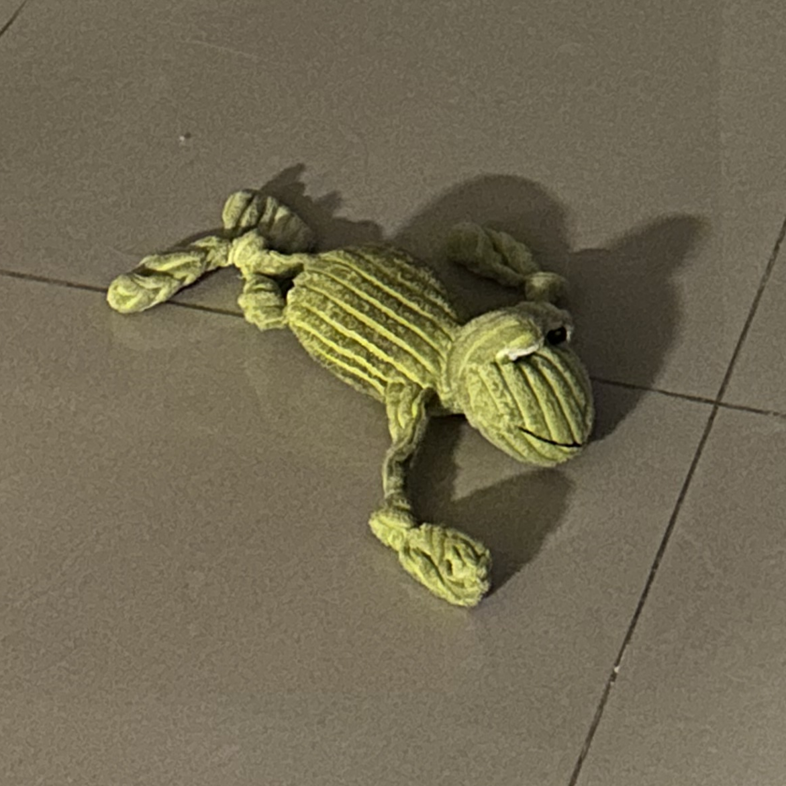

두부의 최애

깨구리 인형
두부의 가장 최애 장남감은 언제 샀는지도 까마득한 깨구리 인형입니다. "두부야 깨구리 어딨어?"하고 물으면 바로 찾아 올 만큼 두부와 정말 오래된 장남감이자 친구랍니다! 깨구리 배안에 삑삑이가 들어 있어서 매일 밤마다 삑삑- 환청이 들린답니다.
코끼리 인형
두부의 두번째 최애 장남감은 코끼리 인형입니다. 깨구리를 세탁하고 말리는 동안 가지고 놀 목적으로 사온 코끼리 인형인데 지금은 깨구리 인형이 어딨는지 모를때 가지고 노는 용도로 사용된답니다. 이 인형도 안에 삑삑이가 있어서 집 안에서는 삑삑- 소리가 끊이지 않는답니다.


고구마
두부는 공장에서 만든 간식을 먹으면 눈물 자국이 너무 심해져서 자연에서 나오는 식재료를 주곤한답니다.고구마는 강아지가 좋아하는 음식으로 잘 알려져 있습니다. 하지만 너무 많은 양을 먹게 되면 쉽게 살이 찌게 되므로 적당한 양을 주는 것이 좋다고 합니다. 저희 집에는 1년 내내 집에는 고구마가 있답니다.
양배추
삶은 양배추도 강아지가 먹어도 되는 야채 중 하나입니다. 양배추는 저칼로리의 간식, 소화기능에 도움이 된답니다. 하지만 건강에 좋은 음식이더라도 적당히 주는 것이 중요한다고 합니다. 이제는 가족이 먹는 용으로 삶았던 양배추가 두부의 최애 간신이 되었답니다.